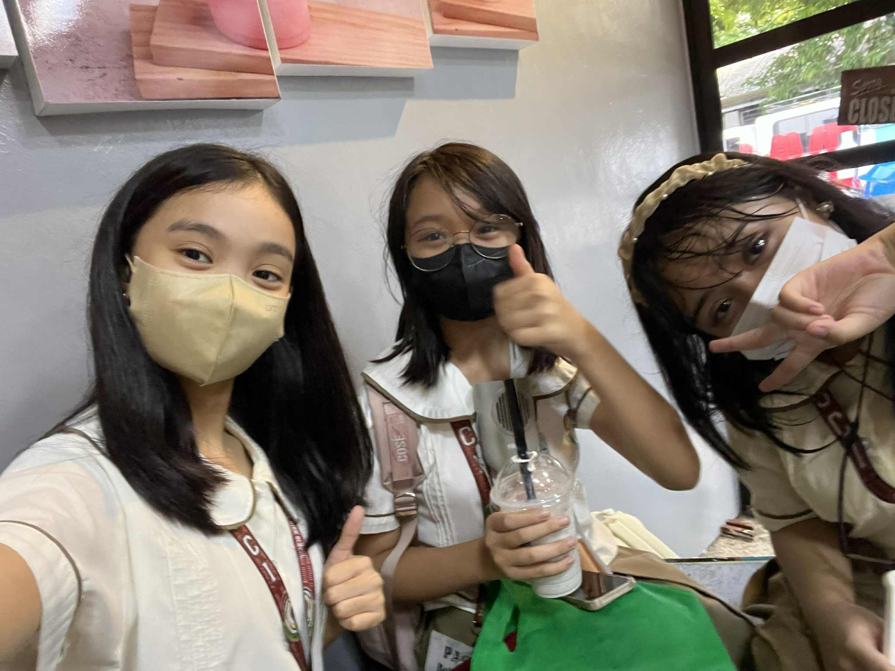
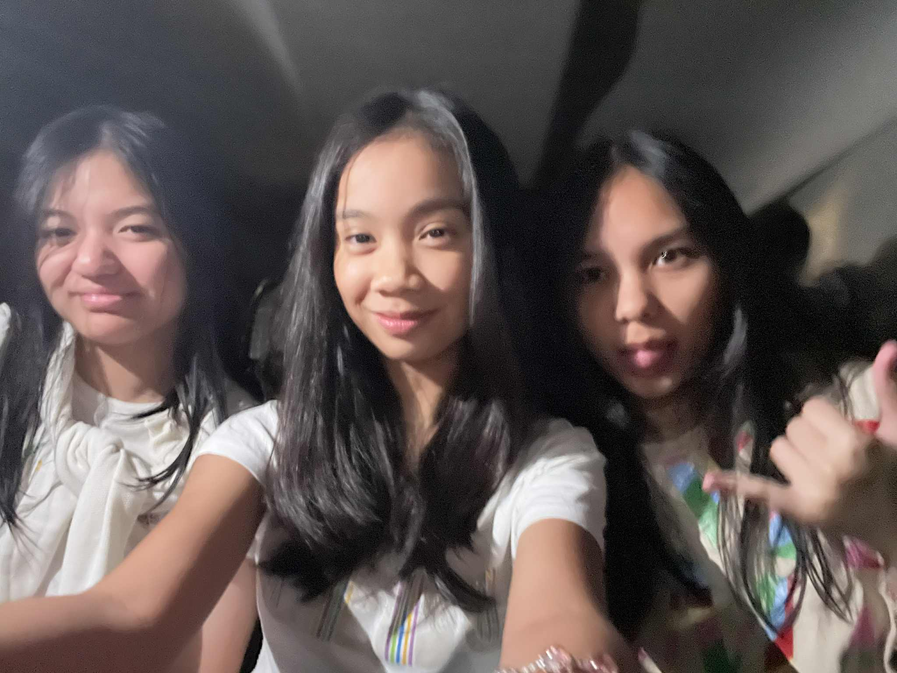
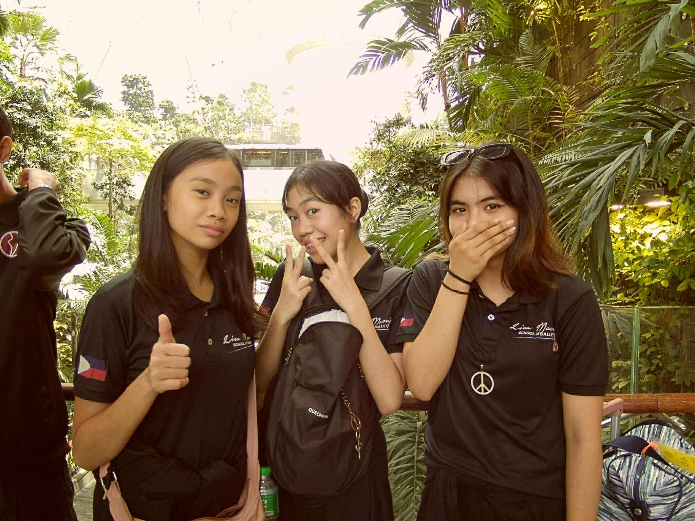
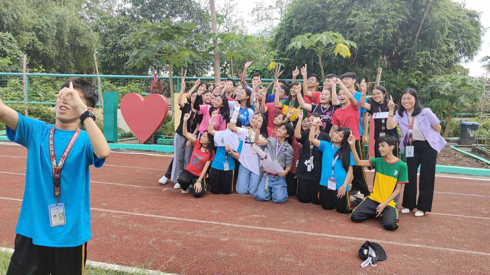
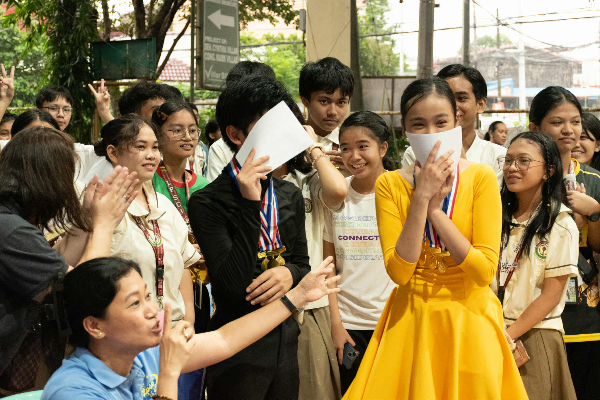
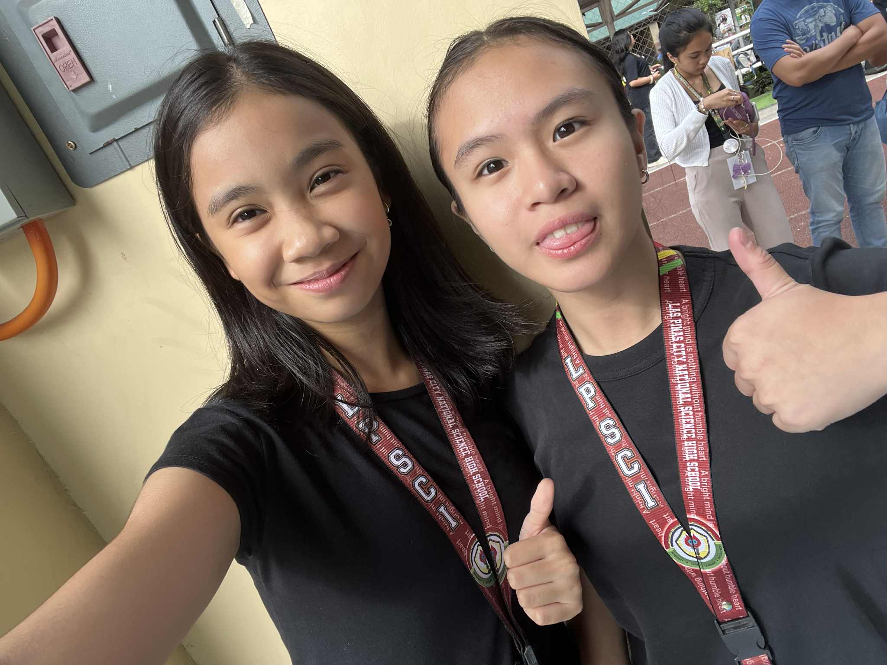
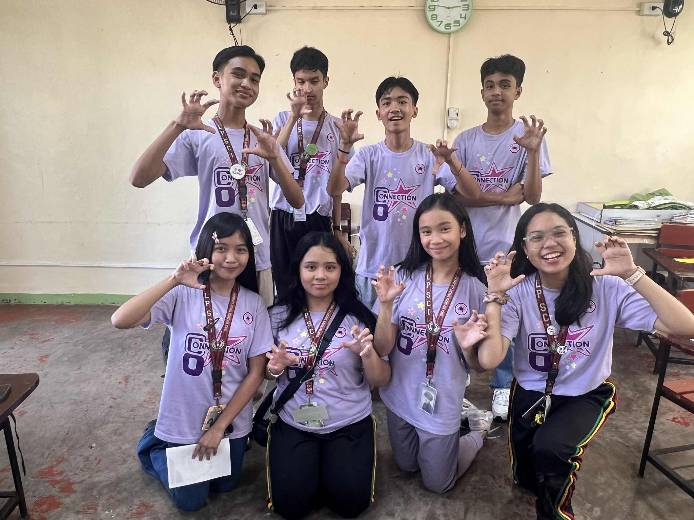
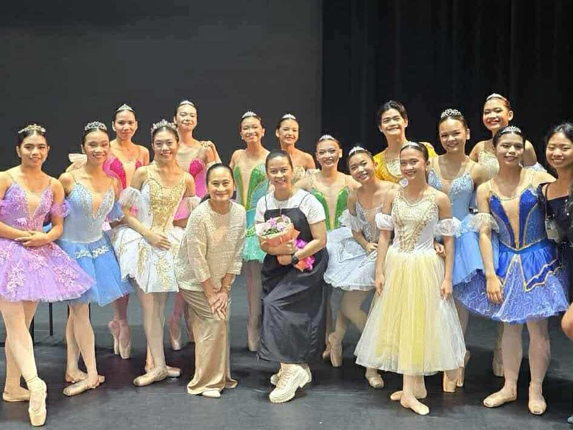

Name: Nina Arabela D. Nuñez
Age: 14
Birthday: November 15, 2010
Favorites!
Color: Pink
Animal: Dogs
Movie: Mamma Mia!
Flower: Lilies
K-pop Group: Enhypen, Cortis
Book: I Hope This Doesn’t Find You - Ann Liang
Hobby: Ballet
Here is a video of this year's Nutrichant! I am very proud of this because I had the privilege of leading my class for this PT, and I would like to say that it is one of my greatest works yet.
Circle of Friends!




Audree Almanza - My best friend of 9 years! First met during kindergarten. Audree, Selsey, and I still keep in touch despite me being in a different school from them.
Selsey Cortes - My best friend of 8 years! First met during grade 1. Audree, Selsey, and I still keep in touch despite me being in a different school from them.
Bela Paguigan- One of my most trusted and cherished friends in LPSci! We bond over K-pop and many other things, often calling each other.
Keiza Rivera - The sweetest and kindest person ever. We became best friends in Grade 7, and we were always there for each other during our ups and downs.
Bianca Ling - We became best friends during Grade 8 and are always together. We both love sharing stories with each other and can always rely on each other.
Dash Reprado - We became best friends during Grade 7, always going to each other whenever there is pair work. We were always together during Grade 7 and are still good friends until today.
Maeur Raquedan - He was my first ever best friend going into LPSci. We’re always together since we both have similar personalities and hobbies, joining lots of dance competitions together.
Martin Torrijos - He is another close friend I made during Grade 7, and we are still good friends until now. He is a very hard-working and generous person.
Renz Amadure - Although we were classmates since Grade 7, we only became closer when we were seatmates during Grade 8. He is a hilarious, kind, and reliable friend.
Cyruz Bacani - We became really close during Grade 7 and kept our bond until now. He is funny, smart, and really kind-hearted.
Keiko Banez - She is my best friend in ballet, and we always do things together. She is talented, funny, and feels like a sister.
Bernice Allenda - She is also one of my best friends in ballet. She is funny, kind, talented, and also feels like a sister to me.




My Family!
The Nuñez family!
My family has four members: my mom, my dad, my kuya, and me. We’re not perfect, and we sometimes have disagreements, but we always manage to work things out and support each other no matter what. I consider my family a healthy one because we never let our problems linger or grow into something bigger. We talk things through and make sure everything is resolved with love and understanding. They’re the people I trust the most and the ones I know will always have my back.